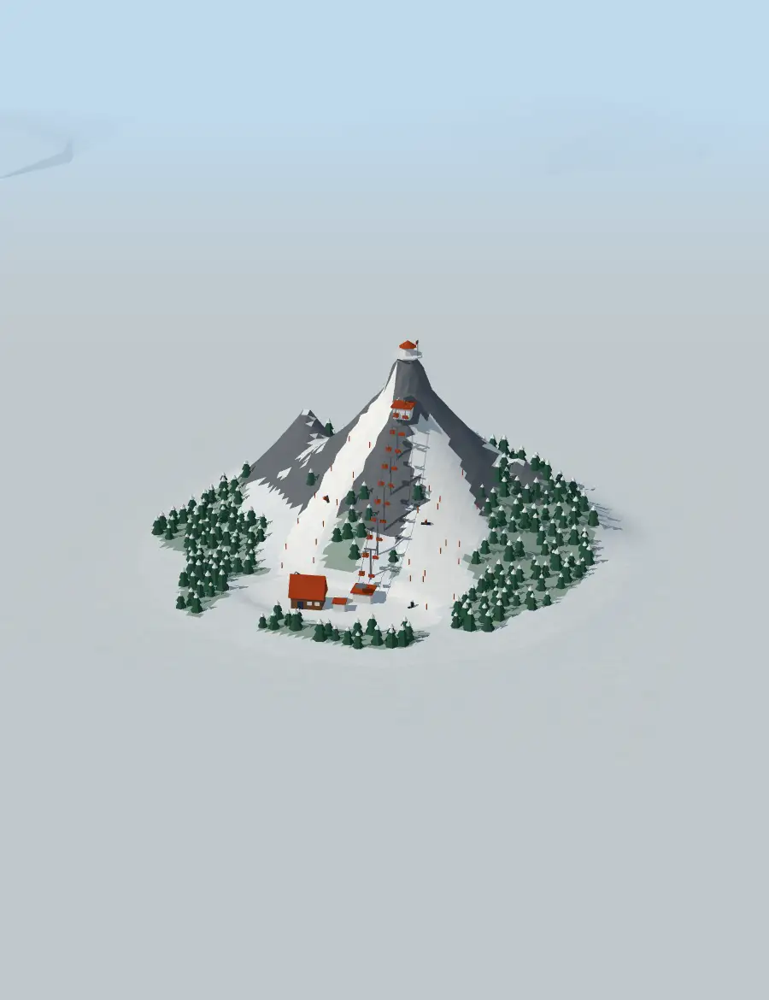

리프트
산 아래에서 정상까지
산 아래 광장에서 정상 바로 아래까지 의자가 오르내려요. 두 슬로프 모두 여기서 올라가요.

눈 덮인 산 하나에 리프트와 슬로프 둘, 쉬어 갈 산장이 모여 있어요.
끌어서 산을 돌리고, 휠로 가까이 볼 수 있어요.
옆으로 끌어 산을 돌리고, 가까이 보기 버튼으로 다가갈 수 있어요.
옆으로 밀어 산을 돌리고, 두 손가락으로 가까이 볼 수 있어요.
명소를 고르면 그곳으로 가까이 가요.
목록에서 명소를 고르면 설명을 볼 수 있어요.
산 아래에서 정상까지
산 아래 광장에서 정상 바로 아래까지 의자가 오르내려요. 두 슬로프 모두 여기서 올라가요.
남동쪽 완만한 비탈
남동쪽 비탈을 넓고 완만하게 굽어 내려가요. 처음 타는 사람도 천천히 내려올 수 있어요.
남서쪽 가파른 비탈
정상 가까이에서 남서쪽 비탈을 곧게 내려가요. 이 산에서 가장 가파른 길이에요.
산 아래 광장
두 슬로프가 끝나는 광장에 있는 쉼터예요. 몸을 녹이며 쉬어 갈 수 있어요.
산꼭대기
이 산에서 가장 높은 곳이에요. 둘레의 먼 산줄기까지 다 보여요.